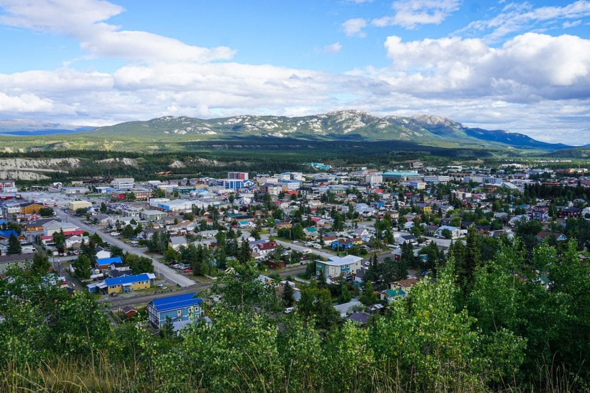
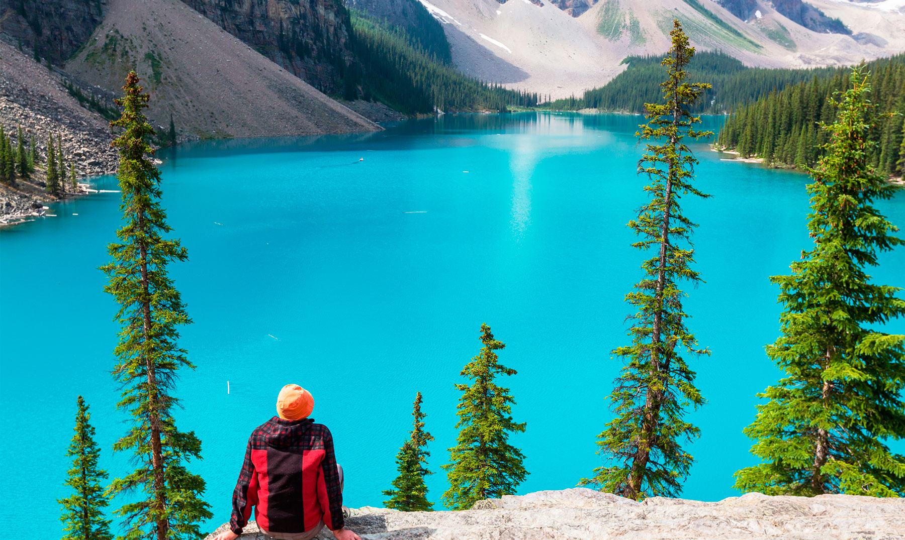
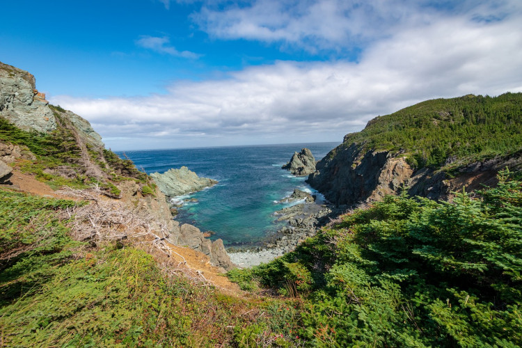
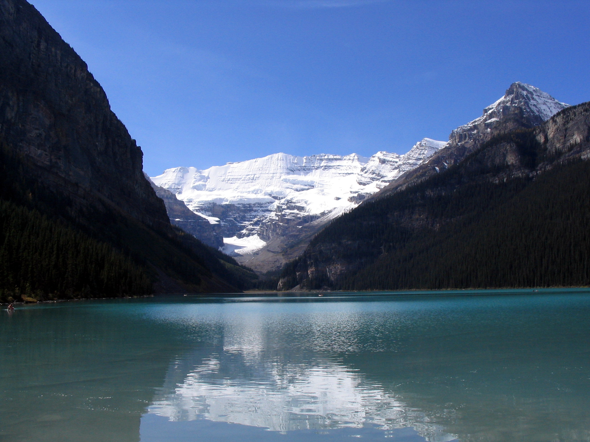

-
Whitehorse
Whitehorse se encuentra al norte de Canadá, y es la puerta de entrada a otras zonas impresionantes como Alaska y el Parque Nacional Yukón, donde puedes explorar impresionantes áreas naturales.
 -
Cataratas del Niágara
Un lugar de fácil acceso, pues están ubicadas a poco más de una hora en auto desde la ciudad de Toronto. Sin lugar a dudas, la atracción natural más famosa de Canadá. Estas caídas de agua de aproximadamente 60 metros pueden verse desde una distancia asombrosamente cercana.

-
Parque Nacional Banff
En el corazón de las Montañas Rocosas, se encuentra la ciudad de Banff, que presta su nombre al Parque Nacional. Aquí puedes disfrutar de sitios de acampada, largas caminatas en verano o practicar esquí en invierno.
 -
Isla de Terranova
Perfecto lugar para contemplar uno de los amaneceres más bellos. En la parte más oriental de Canadá, Terranova es una extensa isla poco poblada cuyo principal atractivo turístico es su naturaleza, que guarda icebergs, ballenas y aves en su hábitat natural.
 -
Lago Louise, Alberta
El paisaje del lago Louise es bellísimo. Su color turquesa contrasta con el verde de los pinos, abetos y demás especies de árboles que lo rodean. Navega en verano sobre sus cristalinas aguas en kayak o canoa y en invierno, esquía sobre la nieve que cubre el valle.
